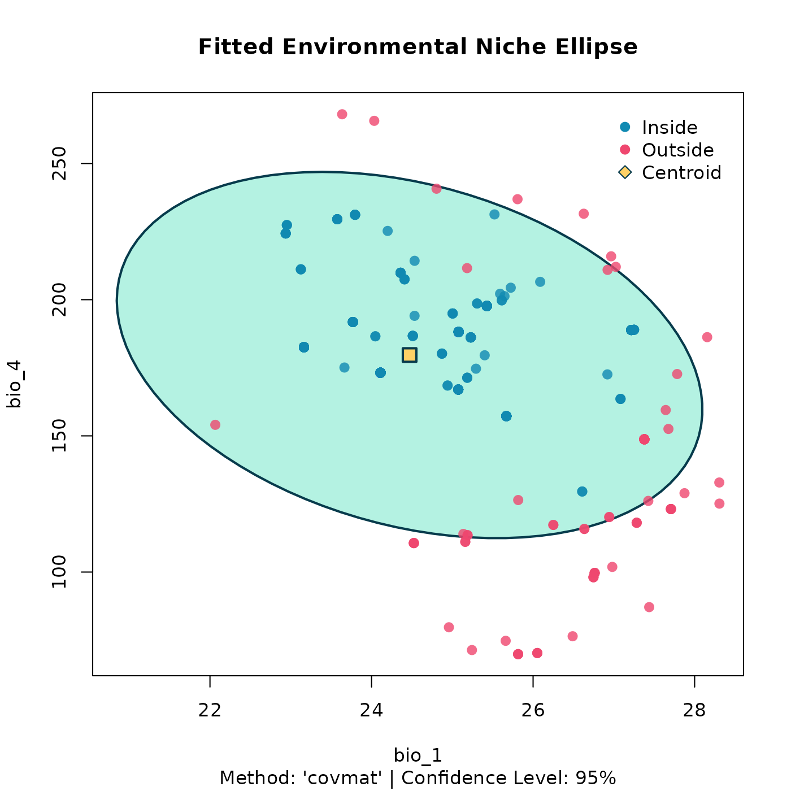
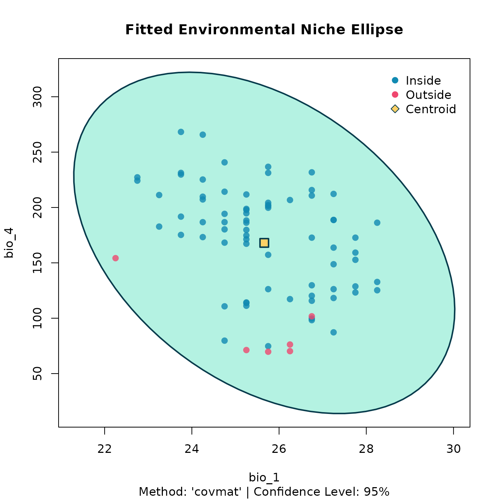
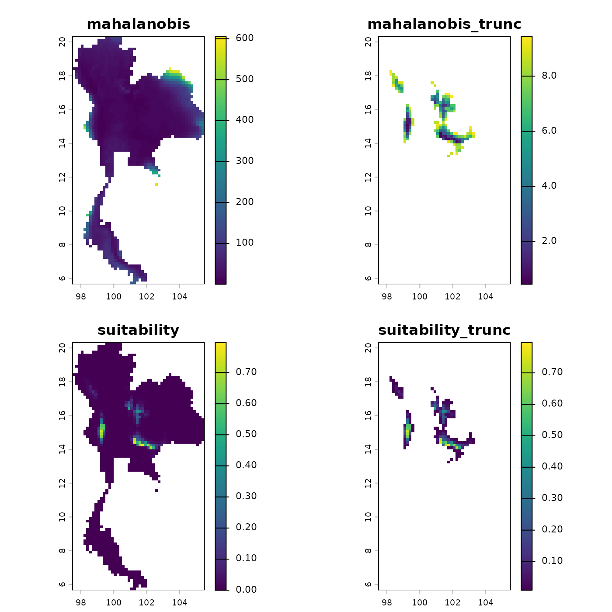
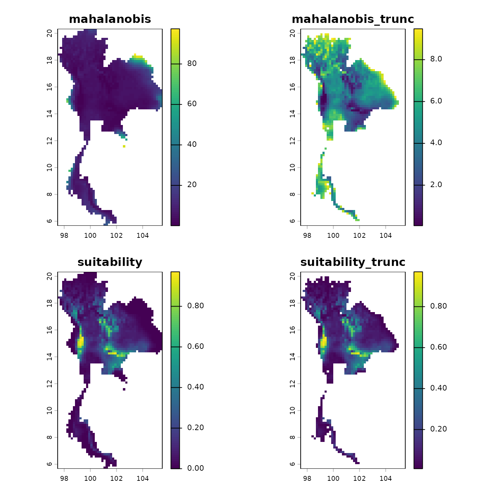
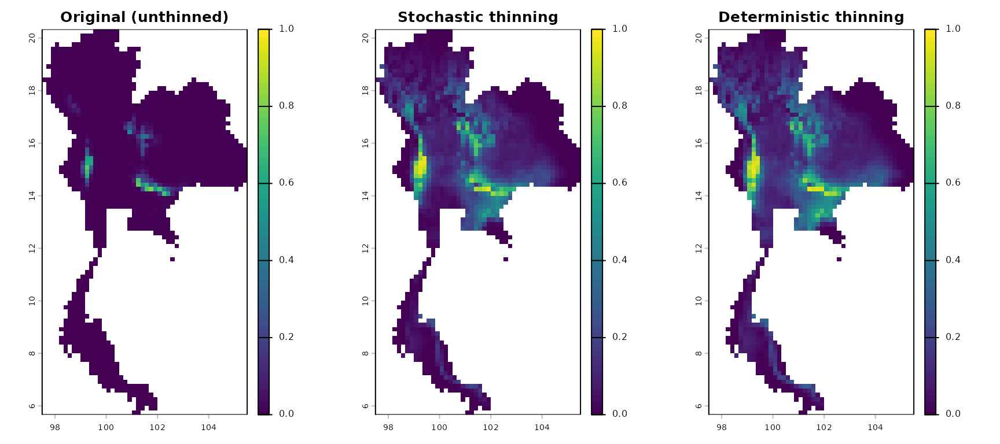

Load the package
Step 6: Delineate and Visualize the Niche Ellipse
After thinning, we can formalize the environmental niche by fitting a
bivariate ellipse around the points. The fit_ellipsoid()
function delineates this boundary.
Original Ellipsoid
# Fit an ellipse that contains 95% of the original data
origin_ellipse <- fit_ellipsoid(data = origin_dat_prepared,
env_vars = c("bio_1","bio_4", "bio_12", "bio_15"),
method = "covmat",
level = 0.95)
# The returned object contains all the details
origin_ellipse
#> --- Bean Environmental Niche Ellipsoid ---
#>
#> Method: 'covmat'.
#> Fitted in 4 dimensions to 1024 data points at a 95.00% level.
#> 947 out of 1024 points (92.5%) fall within the ellipsoid boundary.
#>
#> Niche Centroid:
#> bio_1 bio_4 bio_12 bio_15
#> 24.47107 179.68260 1191.05273 76.98212
# And we can use the custom plot() method for a powerful visualization
plot(origin_ellipse, dims = c(1, 2))
3D Stochastic Ellipsoid
Stochastic Thinned Ellipsoid
# Fit an ellipse that contains 95% of the thinned data
stochastic_ellipse <- fit_ellipsoid(data = thinned_stochastic$thinned_data,
env_vars = c("bio_1","bio_4", "bio_12", "bio_15"),
method = "covmat",
level = 0.95)
stochastic_ellipse
#> --- Bean Environmental Niche Ellipsoid ---
#>
#> Method: 'covmat'.
#> Fitted in 4 dimensions to 78 data points at a 95.00% level.
#> 71 out of 78 points (91.0%) fall within the ellipsoid boundary.
#>
#> Niche Centroid:
#> bio_1 bio_4 bio_12 bio_15
#> 25.63890 167.99191 1323.07692 76.97539
plot(stochastic_ellipse, dims = c(1, 2))3D Stochastic Ellipsoid
Deterministic Thinned Ellipsoid
# Fit an ellipse that contains 95% of the thinned data
deterministic_ellipse <- fit_ellipsoid(data = thinned_deterministic$thinned_points,
env_vars = c("bio_1","bio_4", "bio_12", "bio_15"),
method = "covmat",
level = 0.95)
deterministic_ellipse
#> --- Bean Environmental Niche Ellipsoid ---
#>
#> Method: 'covmat'.
#> Fitted in 4 dimensions to 78 data points at a 95.00% level.
#> 72 out of 78 points (92.3%) fall within the ellipsoid boundary.
#>
#> Niche Centroid:
#> bio_1 bio_4 bio_12 bio_15
#> 25.66026 168.01923 1323.32692 76.98718
plot(deterministic_ellipse, dims = c(1, 2))
3D Deterministic Ellipsoid
Step 7: Predict Niche Suitability
Finally, we project the learned fundamental niche back into
geographic space. The predict method calculates the
continuous Mahalanobis distance and suitability scores across the
landscape.
# Load the environmental raster layers
thai_env_file <- system.file("extdata", "thai_env.tif", package = "bean")
env <- terra::rast(c(thai_env_file))
# Predict using the unthinned ellipsoid
origin_pred <- predict(object = origin_ellipse,
newdata = env,
include_suitability = TRUE,
suitability_truncated = TRUE,
include_mahalanobis = TRUE,
mahalanobis_truncated = TRUE)
plot(origin_pred)
# Predict using the stochastic thinned ellipsoid
stochastic_pred <- predict(object = stochastic_ellipse,
newdata = env,
include_suitability = TRUE,
suitability_truncated = TRUE,
include_mahalanobis = TRUE,
mahalanobis_truncated = TRUE)
plot(stochastic_pred)
# Predict using the deterministic thinned ellipsoid
deterministic_pred <- predict(object = deterministic_ellipse,
newdata = env,
include_suitability = TRUE,
suitability_truncated = TRUE,
include_mahalanobis = TRUE,
mahalanobis_truncated = TRUE)
plot(deterministic_pred)